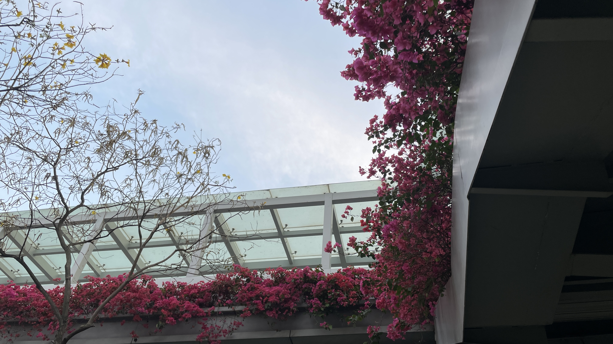
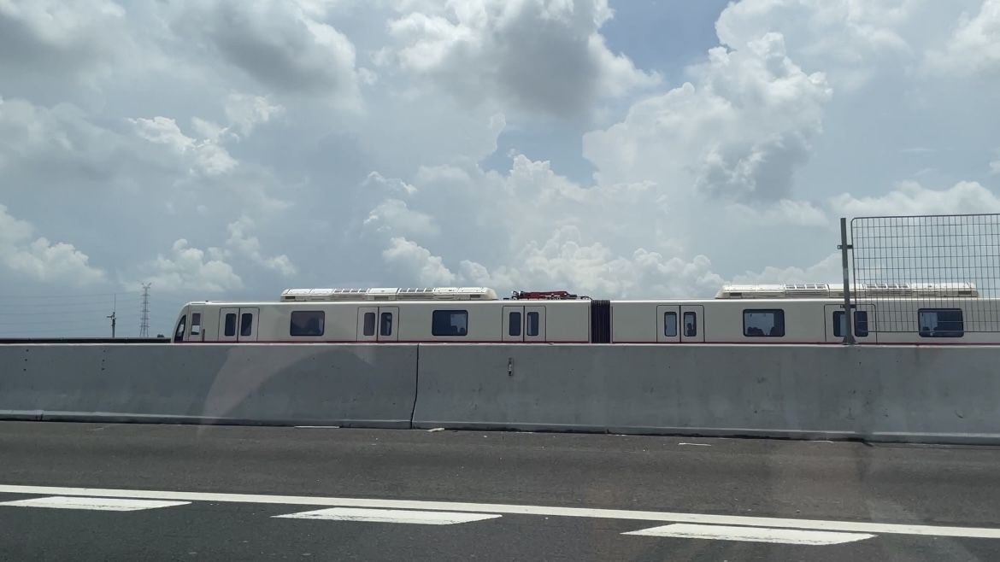

20230807 - 20230813
在即将搬家之际，我想好好写下这一年在深圳的感受。 文末仍然有本周的输入，不想看我碎碎念的朋友可以略过前面的内容 😛
“大海、随处可见的花、晴朗天空下大朵的云”
我很喜欢深圳的大海、花和云，这大概是沿海城市的浪漫吧。
这一年里，最喜欢的事是，下午在海边的咖啡厅工作，傍晚下班了就去海边吹风，如果有晚霞的话就更好了。在海边发呆格外舒服，风很大，天空中的云变换得很快，浮想联翩。或者是对着沿海高速路上来来往往的车发呆，感觉时间在流逝，同时也觉得一切好像是静止的。
－ “能看到大海真的很幸福”
深圳的绿化很好，城市建设也很美，路边经常能看到紫金花。还有一些意想不到的地方也种满了花，比如天桥上：

－ “或许某天只是碰巧抬头，却意外发现天桥上的花开了” 我非常喜欢这种感觉。
沿海城市还有一个特点就是，天气好，每天几乎都是晴天，就算下雨，也很快就停了，不会下那种绵绵不断的梅雨。晴天的云很好看，一大朵一大朵的，轮廓分明。
我很喜欢走深圳郊区的高速路，周围没有高楼，视野被云和天空充满，感觉棒极了。
↓ 这张图是从视频截的，略有点糊了

－ “不知道变成鸟，每天在云海里飞，会不会很幸福”
“偶尔会对高效的生活感到疲惫和空虚”
深圳给我一种非常强烈的 “高效” 的感觉，这种感觉来源于它的秩序，它有严谨合理的城市规划、公共设施建设。
就连政府部门的公章办事都很有效率，我一个福建人在深圳异地办理港澳通行证只用了1、2天时间，很多材料都可以在网上准备，最后只需要去人工录个指纹。
我曾经以为我是一个追求高效生活的人，但后来我发现我不是。
我记得有一次月全食，我想下楼看看月亮，结果到了小区楼下，发现四周的高楼把我紧紧包围，我只能看到一片狭窄的天空。找不到月亮的我，当时有点崩溃，感觉自己活在监狱（现在看有点夸张了，但当时就是这样想的）。我开始埋怨这个城市的 “秩序”，为什么要把高楼建的这么密不透风。
－ “我想离这些高楼远点，越远越好”
还有一次，是在结婚高峰期，也就是十月份左右，我像往常一样来到一个人流较少的海边公园，发现靠近的海边的草地全是拍婚纱的人们，密度惊人。我当时因为大受震撼，特意去数了一下，短短 100m 左右就有十对新人在拍婚纱照。我从他们的脸上甚至看不到任何幸福，只觉得这是一场应付罢了。
－ “高效背后的生活，好像很疲惫，也似乎很难幸福”
(图文无关，这应该是个网红在拍摄)
“如果我不在这，那我该在哪”
我妈老是说我，”你一会在这，一会在那，到处漂”。其实我个人对这一点是无所谓的，相反，我更不喜欢定死在一个地方。
“如果我不在这，那我该在哪”，这个问题我也从来没有思考过答案。
我只是选择当下让我觉得 “舒服” 的一个城市，有足够好的医疗带我给安心，有不辣的好吃的食物带给我满足，有几个亲朋好友能偶尔出来玩，就足够好了。对我来说，舒服这个感觉很重要，如果一个城市让我感觉很内卷很焦虑，我一定会跑。
Joshua 说，”你怎么老在国内晃呢”。Well… 我也蛮想出国看看的，但本福建籍户口不配 🤡，今年的小目标就是看看能不能把户口迁走，然后试试办个护照。
本周输入
浅看了 Uniswap v4 白皮书：Uniswap v4 白皮书，v4 的新特性还蛮多的，比如 factory/pool 合约模式改了，改成了 Singleton，所有池子用一个大合约来管理，这个特性和闪电记账可以让多个 v4 池子之间更高效地路由。
周五康康转发给我，让我快点卸载搜狗，NEW RESEARCH: most popular Chinese keyboard app (450 million monthly users!) transmits every key typed to @TencentGlobal，看完之后很难受，搜狗的联想真的蛮好用的，苹果自带的键盘我一直不是很习惯。但如今已经锤死了，为了我的钱包安全考虑，还是赶紧卸载搜狗 + 换个新钱包吧。😣😣😣
利用碎片化的时间听 Youtube 学英语：
- 學習語言最重要的理論
- TEDx Talks | How to cope with anxiety
- TEDx Talks | My philosophy for a happy life | Sam Berns （好喜欢 Sam，有被他的乐观感染到呜呜）
- TEDx Talks | What makes you special? | Mariana Atencio
一些预告❗️
某天我收拾东西的时候，灵光一闪，“新出一个系列视频，叫「和 Web3 从业者聊聊天」如何？”，拉上我的朋友们，聊聊他们视角里的 Web3，聊聊他们的远程生活之类。
有了这个想法之后，我迅速联系了3、4位好朋友，他们在不同的城市，不同的公司，不同的岗位 😄，他们都表示愿意被采访哈哈哈哈哈哈哈哈哈哈哈哈（没想到套路别人这么轻松！！
以前我的视频总是只有我自己一个人聊 Web3，想必大家已经听厌了，这次我多拉几个人来，希望能给大家带来不一样的视角。我会争取找更多元的人进行聊天，不同地区、公司、岗位、性别、年龄，也期待之后有人找我报名哈哈哈哈哈哈，可以打广告！
这个系列，预计是搬家之后开始录，大家期待一下吧 😁